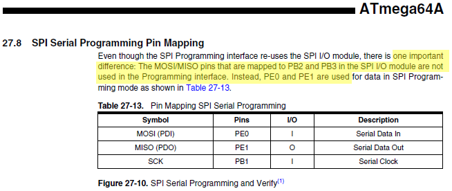
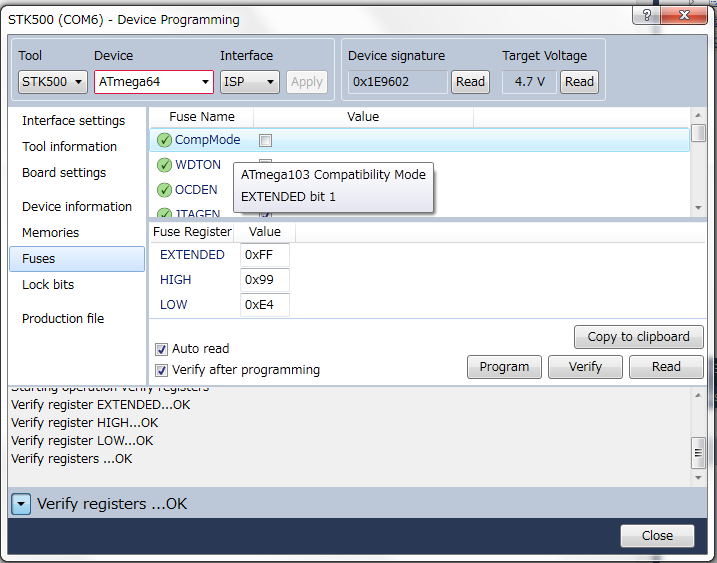

Memo fact sheet
PROGRAMMING - READ ME
One VERY important thing about programming atmega64a babies : you can do it via SPI but don't use the ports MISO and MOSI ! Sounds crazy ? To me too. But read the doc !

WHAAAAAT !?? Not using MISO/MOSI but 2 other pins ! WTF couldn't you say that before I send the cards to produce in China ? Ok it's a matter of 1500 JPY but still. I spent hours (literally) searching why my cards didn't work.
... and wait, there's more !
2.3.15 PEN
This is a programming enable pin for the SPI Serial Programming mode. By holding this pin low
during a Power-on Reset, the device will enter the SPI Serial Programming mode. PEN is internally
pulled high. The pullup is shown in Figure 10-1 on page 52 and its value is given in Section
28.2 “DC Characteristics” on page 327. PEN has no function during normal operation.
WHAAAAAT !?? I have ALSO to pull that pin
/PEN low when I program ??!! And cherry on the cake, that pin is dedicated to that purpose, can't reuse it ... great.
Edit: In fact it seems you don't
have to bring /PEN low, it works fine if not doing it with my pololu programmer. That's one annoyance less.
FUSES - READ ME
And the fun continues : if you don't remove the
Atmega103 compatibility mode
M103C fuse you can have ... strange behavior. Very strange. In my case, I could call a function but the code never got OUT and the method was stuck in a loop ... wicked right ? Just unset the fuse, maybe set the clock to 8MHz oscillator at the occasion. And you're done.
